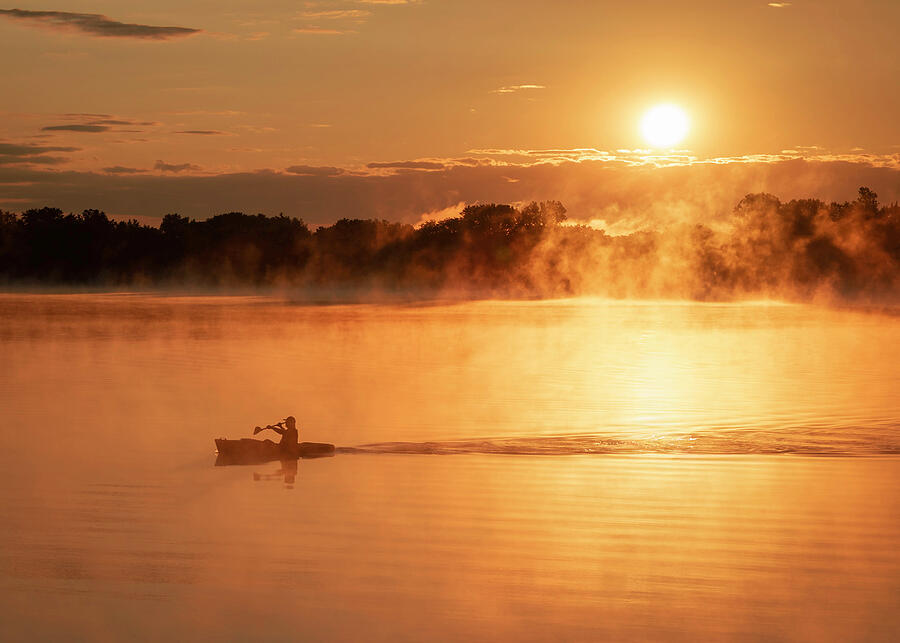
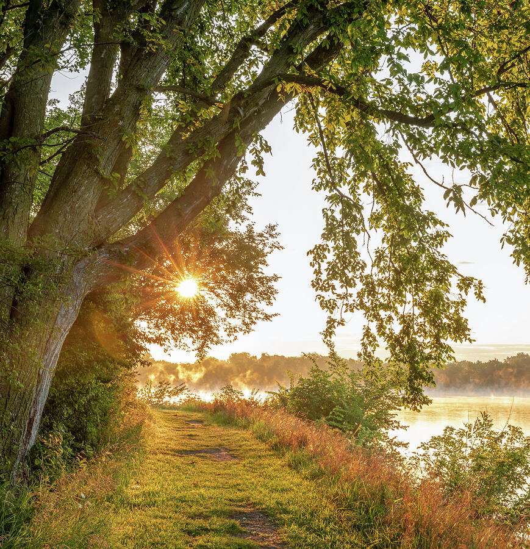
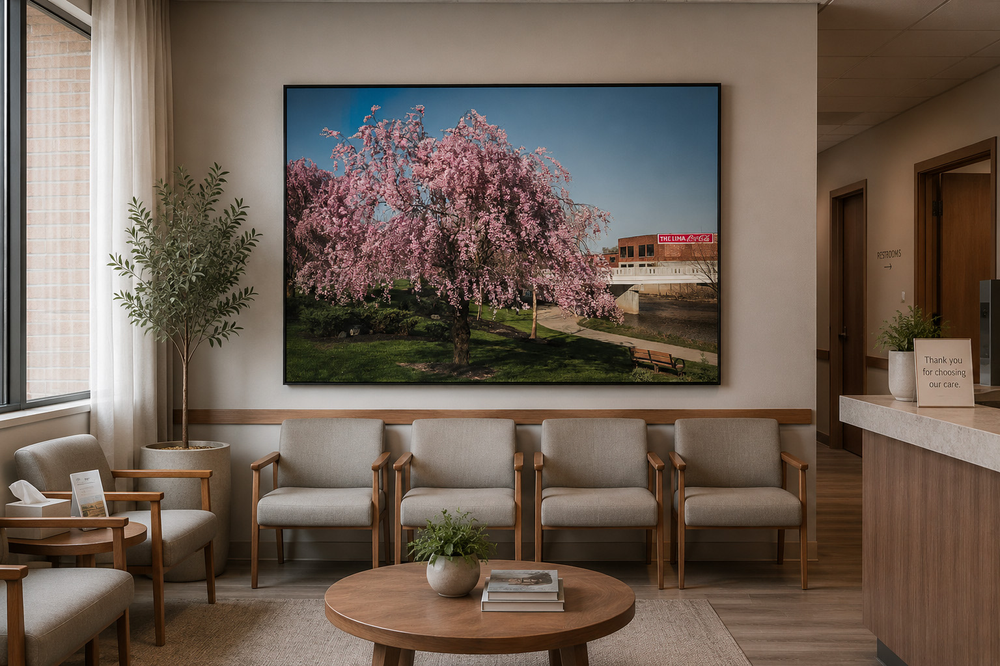
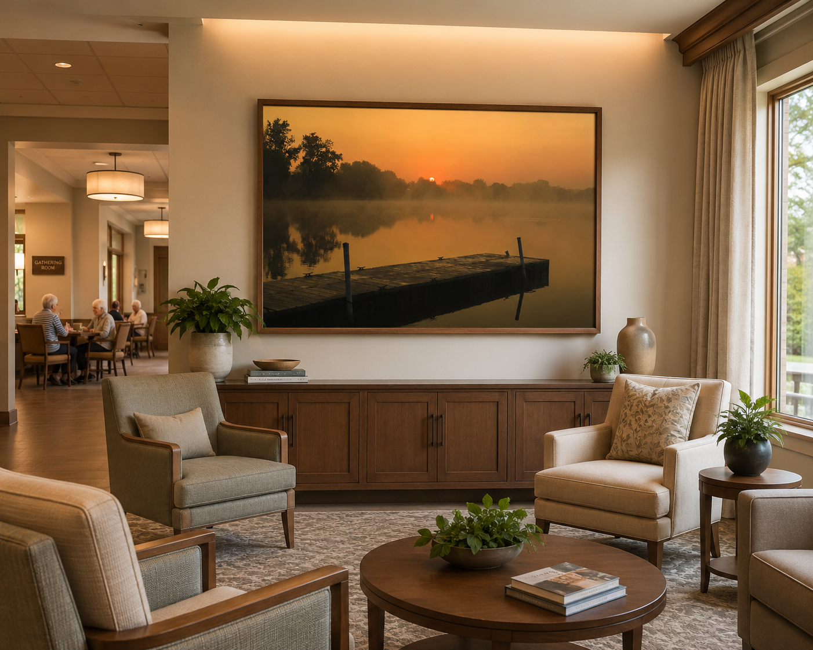
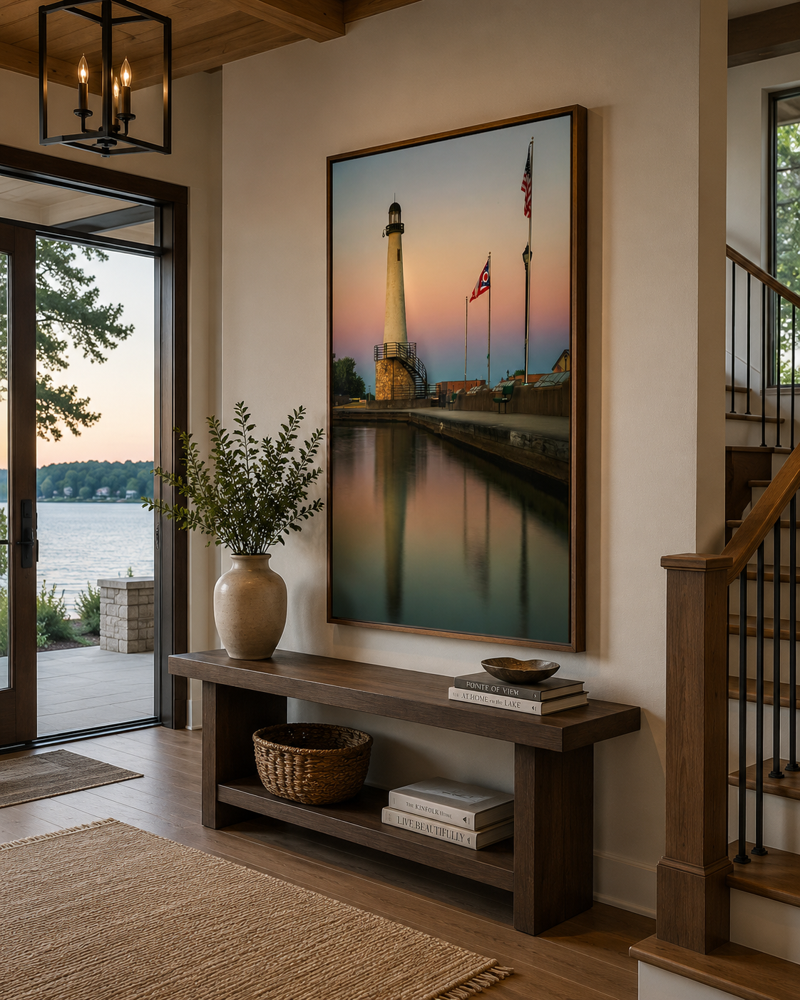
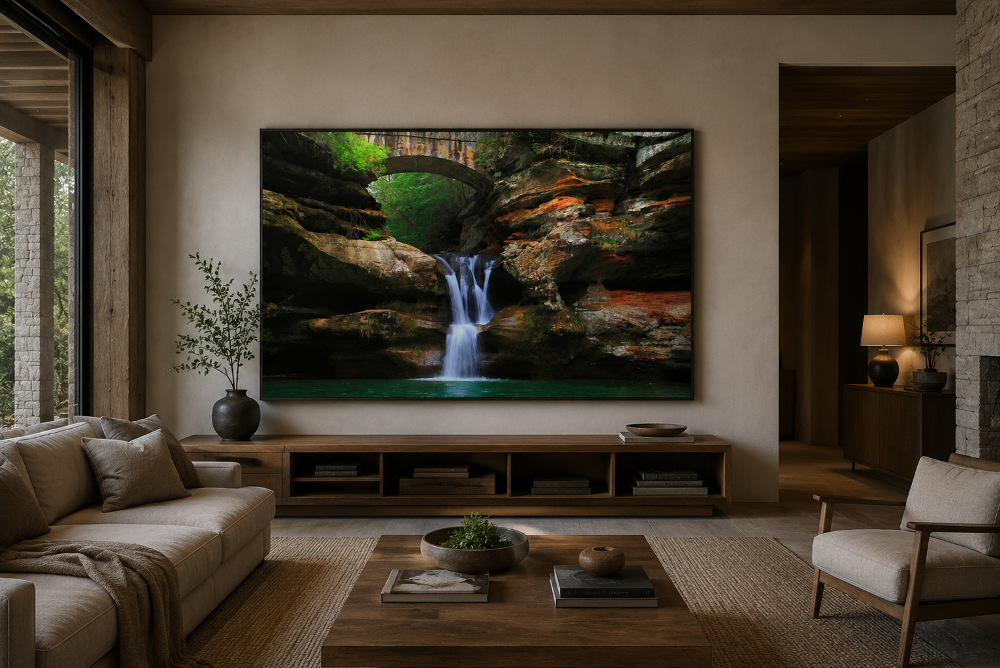
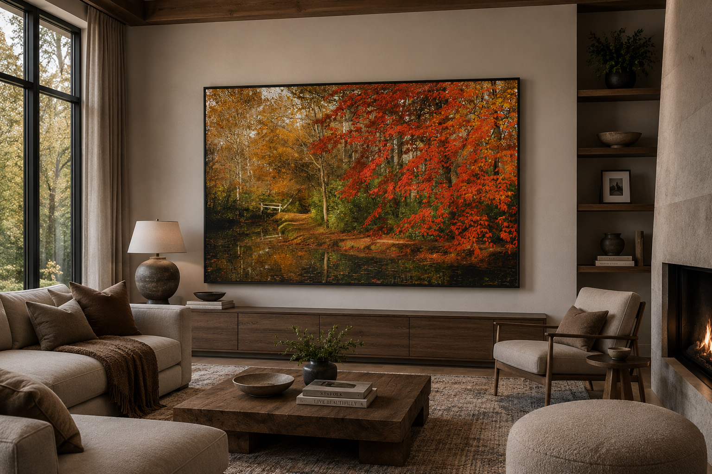

For someone from Lima
Ottawa Metro Park, Allen County farms and familiar Lima landscapes for someone who knows the area personally.
Original photography by Lima-based photographer Dan Sproul featuring Ottawa Metro Park, Allen County, rural Northwest Ohio, Lake Erie, Hocking Hills and recognizable Ohio landscapes. A meaningful gift for current residents, former Ohioans, new homeowners, retirees and anyone who still considers Ohio home.
The strongest local gifts connect someone to a place they recognize. These photographs were made in Lima, Allen County, Northwest Ohio and throughout the state — places connected to morning walks, family memories, hometown pride, vacations and familiar Ohio landscapes.
Choose a Lima photograph for someone with local roots, or explore Ohio landscapes from Lake Erie, Hocking Hills and other destinations for a broader regional gift.
Local and regional photography works especially well when the recipient already has a personal connection to the place.
Ottawa Metro Park, Allen County farms and familiar Lima landscapes for someone who knows the area personally.
A recognizable Ohio landscape can be a personal reminder of home for someone who now lives elsewhere.
Framed landscapes, barns, lakes and waterfalls offer an easy way to connect a new home with the region.
Local artwork can mark retirement, anniversaries, family moves, business milestones and other important moments.
Photographs created close to home in Lima, Allen County and Ottawa Metro Park — my strongest choices for shoppers specifically looking for a Lima Ohio gift.

Warm morning light across a colorful Northwest Ohio meadow.
Gift idea: Lima natives, nature lovers, new homeowners and bright residential interiors.
Shop This Print →
A timeless black-and-white rural Ohio barn emphasizing weathered architecture and local character.
Gift idea: farm families, former Ohio residents, farmhouse interiors and regional-history lovers.
Shop This Print →
A quiet kayaker crossing misty water as early sunlight reaches the lake.
Gift idea: kayakers, outdoor families, Ottawa Metro Park visitors and wellness-inspired interiors.
Shop This Print →
Morning mist and low golden light along a familiar Northwest Ohio walking path.
Gift idea: walkers, runners, nature lovers and anyone with memories of Ottawa Metro Park.
Shop This Print →
Still water, a quiet dock and early fog create one of the most recognizably peaceful local scenes in the collection.
Gift idea: Lima families, park visitors and anyone drawn to quiet water imagery.
Shop This Print →
Soft Ohio spring color with a distinctly local connection.
Gift idea: birthdays, Mother's Day, housewarmings and people who love spring in Ohio.
Shop This Print →Instead of choosing a generic landscape, local photography gives the recipient a specific connection — a park they visit, a road they have driven, a part of Ohio they grew up near or a place they still call home.
For someone whose connection extends beyond Northwest Ohio, these statewide pieces feature familiar Ohio lakes, lighthouses, countryside, waterfalls and seasonal scenery.

Soft sunrise color and peaceful water with a strong Northwest Ohio connection.
Gift idea: former Lima residents, retirees and anyone who wants a quiet hometown landscape.
Shop This Print →
A colorful Ohio lake-and-lighthouse scene with a strong regional identity.
Gift idea: Celina families, lake-home owners and Grand Lake visitors.
Shop This Print →
One of Ohio's most recognizable Lake Erie landmarks presented as destination-inspired artwork.
Gift idea: Lake Erie families, boaters, lighthouse collectors and Ohio vacation memories.
Shop This Print →
Rural Ohio character and winter texture with a nostalgic farmhouse atmosphere.
Gift idea: farm families, country-home owners and Midwest nostalgia.
Shop This Print →
Flowing water, sandstone and forest atmosphere from one of Ohio's best-known natural destinations.
Gift idea: hikers, Ohio travelers, waterfall lovers and Hocking Hills visitors.
Shop This Print →
Warm fall color from one of western Ohio's most beautiful wooded parks.
Gift idea: Sidney families, fall lovers, hikers and western Ohio residents.
Shop This Print →A local photograph works especially well when you are buying for someone who already has everything. Choose a place connected to their life, then select the size and format that fits their home or office.
If you are searching for a Lima Ohio gift, locally photographed artwork offers a more personal option than a generic souvenir. Dan Sproul is based in Lima and regularly photographs Ottawa Metro Park, Allen County landscapes, rural Northwest Ohio, local wildlife, seasonal color, fog, lakes and sunrise scenes.
These photographs are especially suited for people who grew up in Lima, moved away from Northwest Ohio, recently purchased a home, retired from a local organization or simply want artwork connected to the region. Many photographs are available as framed prints, art prints, canvas, metal and acrylic.
The collection also includes Ohio photography gifts from across the state, including Lake Erie, Marblehead Lighthouse, Celina, Hocking Hills, Tawawa Park and other familiar destinations. That makes it easier to choose artwork based on the recipient's own memories and favorite parts of Ohio.
For a broader selection, visit the Ohio Nature Photography collection, explore Lima and Allen County photography, or browse best-selling artwork.
Dan Sproul is a Lima-based fine art photographer offering original photography from Lima, Allen County, Northwest Ohio and locations throughout the state. Prints can be purchased online in multiple sizes and formats.
A recognizable Ottawa Metro Park, Allen County or Lima landscape gives someone a visual connection to home without feeling like a traditional souvenir.
Yes. The Ohio collection includes Lake Erie, Marblehead Lighthouse, Celina, Hocking Hills, Tawawa Park, waterfalls, forests, farms and other places across the state.
Yes. Send the recipient's connection to Ohio, preferred location, approximate wall size or room style and Dan can help narrow the collection.